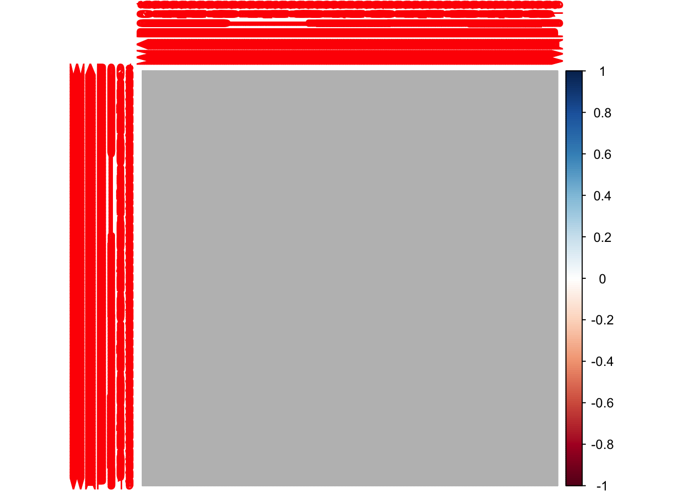
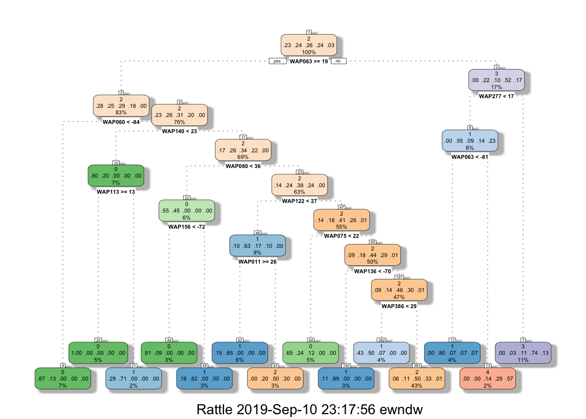

knitr::opts_chunk$set(echo = TRUE)
pacman::p_load(ggplot2, dplyr, party, caret, corrplot, reshape, rpart, rattle, psych, tidyr, stringr, randomForest, tictoc, corrplot)
wifidataTrain <- read.csv("~/Documents/@/UBIQUM/DATAML/ModuleIOT/WIFI/datasets/trainingData.csv")
#Remove Scientific notations
options(scipen=999)
#Seed function
reset.seed <- function()
{
set.seed(1337)
}#Convert Buildings, SpaceID and Floor as factors
wifidataTrain$BUILDINGID <- as.factor(wifidataTrain$BUILDINGID)
wifidataTrain$SPACEID <- as.factor(wifidataTrain$SPACEID)
wifidataTrain$FLOOR <- as.factor(wifidataTrain$FLOOR)
#Descriptive Statistics @psych package
#Describe the first 50 columns
describe(wifidataTrain[1:50])## vars n mean sd median trimmed mad min max range skew
## WAP001 1 19937 99.82 5.87 100 100.00 0 -97 100 197 -33.23
## WAP002 2 19937 99.82 5.80 100 100.00 0 -90 100 190 -32.35
## WAP003 3 19937 100.00 0.00 100 100.00 0 100 100 0 NaN
## WAP004 4 19937 100.00 0.00 100 100.00 0 100 100 0 NaN
## WAP005 5 19937 99.61 8.62 100 100.00 0 -97 100 197 -22.26
## WAP006 6 19937 97.13 22.93 100 100.00 0 -98 100 198 -7.88
## WAP007 7 19937 94.73 30.54 100 100.00 0 -99 100 199 -5.65
## WAP008 8 19937 93.82 33.01 100 100.00 0 -98 100 198 -5.17
## WAP009 9 19937 94.69 30.31 100 100.00 0 -98 100 198 -5.56
## WAP010 10 19937 99.16 12.63 100 100.00 0 -99 100 199 -15.05
## WAP011 11 19937 74.14 62.18 100 90.39 0 -101 100 201 -2.01
## WAP012 12 19937 73.90 62.44 100 90.10 0 -101 100 201 -1.99
## WAP013 13 19937 82.80 52.01 100 100.00 0 -98 100 198 -2.71
## WAP014 14 19937 82.96 51.80 100 100.00 0 -98 100 198 -2.73
## WAP015 15 19937 90.62 40.71 100 100.00 0 -101 100 201 -4.11
## WAP016 16 19937 90.63 40.83 100 100.00 0 -99 100 199 -4.13
## WAP017 17 19937 99.20 12.30 100 100.00 0 -98 100 198 -15.32
## WAP018 18 19937 99.15 12.62 100 100.00 0 -98 100 198 -14.87
## WAP019 19 19937 96.33 25.14 100 100.00 0 -99 100 199 -6.72
## WAP020 20 19937 96.58 24.27 100 100.00 0 -99 100 199 -6.97
## WAP021 21 19937 99.64 8.36 100 100.00 0 -98 100 198 -23.15
## WAP022 22 19937 99.64 8.35 100 100.00 0 -98 100 198 -23.15
## WAP023 23 19937 93.04 34.56 100 100.00 0 -100 100 200 -4.80
## WAP024 24 19937 93.00 34.66 100 100.00 0 -99 100 199 -4.78
## WAP025 25 19937 94.37 31.18 100 100.00 0 -98 100 198 -5.38
## WAP026 26 19937 94.15 31.77 100 100.00 0 -98 100 198 -5.27
## WAP027 27 19937 93.04 34.53 100 100.00 0 -99 100 199 -4.78
## WAP028 28 19937 92.79 35.11 100 100.00 0 -98 100 198 -4.68
## WAP029 29 19937 86.83 45.94 100 100.00 0 -98 100 198 -3.23
## WAP030 30 19937 86.33 46.82 100 100.00 0 -99 100 199 -3.16
## WAP031 31 19937 94.68 30.09 100 100.00 0 -99 100 199 -5.51
## WAP032 32 19937 94.69 30.03 100 100.00 0 -101 100 201 -5.51
## WAP033 33 19937 86.46 46.51 100 100.00 0 -98 100 198 -3.17
## WAP034 34 19937 86.51 46.42 100 100.00 0 -98 100 198 -3.17
## WAP035 35 19937 83.70 50.70 100 100.00 0 -100 100 200 -2.81
## WAP036 36 19937 83.69 50.73 100 100.00 0 -98 100 198 -2.81
## WAP037 37 19937 92.22 36.65 100 100.00 0 -99 100 199 -4.52
## WAP038 38 19937 93.60 33.35 100 100.00 0 -98 100 198 -5.05
## WAP039 39 19937 87.04 45.52 100 100.00 0 -100 100 200 -3.25
## WAP040 40 19937 86.73 46.06 100 100.00 0 -98 100 198 -3.20
## WAP041 41 19937 84.98 48.85 100 100.00 0 -99 100 199 -2.96
## WAP042 42 19937 84.75 49.17 100 100.00 0 -98 100 198 -2.93
## WAP043 43 19937 89.71 40.79 100 100.00 0 -99 100 199 -3.74
## WAP044 44 19937 89.42 41.35 100 100.00 0 -100 100 200 -3.68
## WAP045 45 19937 93.15 34.63 100 100.00 0 -100 100 200 -4.89
## WAP046 46 19937 92.53 36.15 100 100.00 0 -99 100 199 -4.65
## WAP047 47 19937 87.59 44.79 100 100.00 0 -99 100 199 -3.36
## WAP048 48 19937 87.48 44.96 100 100.00 0 -98 100 198 -3.34
## WAP049 49 19937 96.49 24.60 100 100.00 0 -100 100 200 -6.90
## WAP050 50 19937 96.18 25.77 100 100.00 0 -99 100 199 -6.62
## kurtosis se
## WAP001 1102.64 0.04
## WAP002 1044.69 0.04
## WAP003 NaN 0.00
## WAP004 NaN 0.00
## WAP005 493.62 0.06
## WAP006 60.23 0.16
## WAP007 30.05 0.22
## WAP008 24.81 0.23
## WAP009 28.97 0.21
## WAP010 224.49 0.09
## WAP011 2.07 0.44
## WAP012 2.01 0.44
## WAP013 5.38 0.37
## WAP014 5.48 0.37
## WAP015 14.96 0.29
## WAP016 15.09 0.29
## WAP017 232.72 0.09
## WAP018 219.36 0.09
## WAP019 43.29 0.18
## WAP020 46.78 0.17
## WAP021 534.02 0.06
## WAP022 534.02 0.06
## WAP023 21.16 0.24
## WAP024 20.98 0.25
## WAP025 27.08 0.22
## WAP026 25.87 0.23
## WAP027 20.99 0.24
## WAP028 20.00 0.25
## WAP029 8.50 0.33
## WAP030 8.06 0.33
## WAP031 28.62 0.21
## WAP032 28.56 0.21
## WAP033 8.10 0.33
## WAP034 8.14 0.33
## WAP035 5.97 0.36
## WAP036 5.98 0.36
## WAP037 18.57 0.26
## WAP038 23.66 0.24
## WAP039 8.64 0.32
## WAP040 8.35 0.33
## WAP041 6.84 0.35
## WAP042 6.66 0.35
## WAP043 12.13 0.29
## WAP044 11.66 0.29
## WAP045 22.01 0.25
## WAP046 19.79 0.26
## WAP047 9.36 0.32
## WAP048 9.24 0.32
## WAP049 45.85 0.17
## WAP050 42.09 0.18#Describe the categorical columns
describe(wifidataTrain[525:529])## vars n mean sd median
## SPACEID* 1 19937 57.87 27.09 54
## RELATIVEPOSITION 2 19937 1.83 0.37 2
## USERID 3 19937 9.07 4.99 11
## PHONEID 4 19937 13.02 5.36 13
## TIMESTAMP 5 19937 1371421250.68 557205.40 1371715972
## trimmed mad min max range skew
## SPACEID* 56.86 31.13 1 123 122 0.26
## RELATIVEPOSITION 1.92 0.00 1 2 1 -1.79
## USERID 9.11 5.93 1 18 17 -0.24
## PHONEID 12.93 4.45 1 24 23 0.02
## TIMESTAMP 1371555747.02 8019.38 1369908924 1371737745 1828821 -1.72
## kurtosis se
## SPACEID* -0.70 0.19
## RELATIVEPOSITION 1.19 0.00
## USERID -0.97 0.04
## PHONEID -0.18 0.04
## TIMESTAMP 1.57 3946.26#I've found a lot of rows with 0 Range. For that I remove the ones with Zero Variance
Zerobar <- nearZeroVar(wifidataTrain,saveMetrics = TRUE)
wifidataTrain <- wifidataTrain[,!Zerobar$zeroVar]
#remove duplicates
wifidataTrain <- distinct(wifidataTrain)
reset.seed()#Create the correlation matrix
corrData <- cor(wifidataTrain[,1:465])
corrplot(corrData)
#Extract highly correlated data (As documented in Caret Package https://web.archive.org/web/20180217114700/http://topepo.github.io/caret/pre-processing.html#corr)
highCorr <- sum(abs(corrData[upper.tri(corrData)]) > .999)
#i've found there are values above 0.99
summary(corrData[upper.tri(corrData)])## Min. 1st Qu. Median Mean 3rd Qu. Max.
## -0.2030918 -0.0232801 -0.0051047 0.0057678 -0.0008556 0.9999832#Select correlated values above .75
highlyCorDescr <- findCorrelation(corrData, cutoff = .75)
#Remove the 112 correlated variables
wifidataTrain <- wifidataTrain[,-highlyCorDescr]
#Check again if we have removed all the correlated vars
corrData2 <- cor(wifidataTrain[,1:353])
#Yes, now the Max. is 0.74...
summary(corrData2[upper.tri(corrData2)])## Min. 1st Qu. Median Mean 3rd Qu. Max.
## -0.2030918 -0.0132610 -0.0031318 0.0062903 -0.0005132 0.7483818#Stratification for sampling
#By spaceId?
#Filtering by buildings?
# data_building_1_floor <- wifidataTrain %>% filter()#Splitting the data with ALL VARIABLES. Bad approach
#intrain <- createDataPartition(y = wifiTrainSample$FLOOR, p= 0.7, list = FALSE)
#train <- wifiTrainSample[intrain, ]
#test <- wifiTrainSample[-intrain, ]
#trainControl
#ctrl <- trainControl(method ="repeatedcv", repeats = 3, classProbs = TRUE, summaryFunction = multiClassSummary) #random forest with All Variables @Caret. Still bad approach
#plsFit <- train(FLOOR~., data = train, method = "rf",tuneLength = 2, preProc = c("center", "scale"))
#plsFit
#predrf <- predict(plsFit, newdata = test)
#pred_metric_rf <- postResample(test$FLOOR, predrf)
#pred_metric_rf####################################################################
reset.seed()
#I've Took a sample of 1872 rows (that's the double of the references points we had) but it was too much time consuming for caret..
#wifiTrainSample <- wifidataTrain[sample(1:nrow(wifidataTrain), 1872, replace=FALSE),]
#Select variables only with WAPS + Floor
wifiOnlyWaps <- wifidataTrain %>% select(c(1:353, 356))
#Take a sample of 500
wifiTrainSampleWaps <- wifiOnlyWaps[sample(1:nrow(wifiOnlyWaps), 500, replace=FALSE),] #Splitting
intrainWaps <- createDataPartition(y = wifiTrainSampleWaps$FLOOR, p= 0.7, list = FALSE)
trainWaps <- wifiTrainSampleWaps[intrainWaps, ]
testWaps <- wifiTrainSampleWaps[-intrainWaps, ]#Random forest ~FLOOR @Caret
#Train the model
#plsFitWapsFloor <- train(FLOOR~., data = trainWaps, method = "rf")
#Save the model
#save(plsFitWapsFloor, file = "Floor_RFSample.rda")
#Upload the model
load("Data_Exploration_Models/Floor_RFSample.rda") #plsFitWapsFloor#Get the metrics of the model
plsFitWapsFloor## Random Forest
##
## 352 samples
## 353 predictors
## 5 classes: '0', '1', '2', '3', '4'
##
## No pre-processing
## Resampling: Bootstrapped (25 reps)
## Summary of sample sizes: 352, 352, 352, 352, 352, 352, ...
## Resampling results across tuning parameters:
##
## mtry Accuracy Kappa
## 2 0.3351890 0.05664935
## 177 0.6994348 0.59905336
## 353 0.6823693 0.57688455
##
## Accuracy was used to select the optimal model using the largest value.
## The final value used for the model was mtry = 177.#Predict the Test set
predrf_Floor <- predict(plsFitWapsFloor, newdata = testWaps)
#Post Resample
pred_metric_rf_Floor <- postResample(testWaps$FLOOR, predrf_Floor)
#Get the metrics for the test
pred_metric_rf_Floor## Accuracy Kappa
## 0.7837838 0.7161012#Error Analysis
#create a new DF
testWapsRF <- testWaps
#create a new column with the predicted values
testWapsRF$Predicted <- predrf_Floor
#Confusion Matrix
confusionMatrix(data= testWapsRF$Predicted, reference = testWapsRF$FLOOR)## Confusion Matrix and Statistics
##
## Reference
## Prediction 0 1 2 3 4
## 0 23 3 1 0 0
## 1 11 28 3 0 0
## 2 0 2 28 1 0
## 3 1 3 6 34 1
## 4 0 0 0 0 3
##
## Overall Statistics
##
## Accuracy : 0.7838
## 95% CI : (0.7087, 0.8472)
## No Information Rate : 0.2568
## P-Value [Acc > NIR] : < 0.00000000000000022
##
## Kappa : 0.7161
##
## Mcnemar's Test P-Value : NA
##
## Statistics by Class:
##
## Class: 0 Class: 1 Class: 2 Class: 3 Class: 4
## Sensitivity 0.6571 0.7778 0.7368 0.9714 0.75000
## Specificity 0.9646 0.8750 0.9727 0.9027 1.00000
## Pos Pred Value 0.8519 0.6667 0.9032 0.7556 1.00000
## Neg Pred Value 0.9008 0.9245 0.9145 0.9903 0.99310
## Prevalence 0.2365 0.2432 0.2568 0.2365 0.02703
## Detection Rate 0.1554 0.1892 0.1892 0.2297 0.02027
## Detection Prevalence 0.1824 0.2838 0.2095 0.3041 0.02027
## Balanced Accuracy 0.8109 0.8264 0.8548 0.9370 0.87500#KNN ~FLOOR @Caret
#Train the model
#plsFitWapsFloorKNN <- train(FLOOR~., data = trainWaps, method = "knn",preProc = c("center", "scale"))
#Save the model
#save(plsFitWapsFloorKNN, file = "Floor_KNNSample.rda")
#Upload the model
load("Data_Exploration_Models/Floor_KNNSample.rda") #plsFitWapsFloorKNN
#Get the metrics of the model
plsFitWapsFloorKNN## k-Nearest Neighbors
##
## 352 samples
## 353 predictors
## 5 classes: '0', '1', '2', '3', '4'
##
## Pre-processing: centered (353), scaled (353)
## Resampling: Bootstrapped (25 reps)
## Summary of sample sizes: 352, 352, 352, 352, 352, 352, ...
## Resampling results across tuning parameters:
##
## k Accuracy Kappa
## 5 0.5858907 0.4474131
## 7 0.5761894 0.4334837
## 9 0.5620341 0.4129063
##
## Accuracy was used to select the optimal model using the largest value.
## The final value used for the model was k = 5.#Predict the Test set
predrf_FloorKNN <- predict(plsFitWapsFloorKNN, newdata = testWaps)
#Post Resample
pred_metric_rf_FloorKNN <- postResample(testWaps$FLOOR, predrf_FloorKNN)
#Get the metrics for the test
pred_metric_rf_FloorKNN## Accuracy Kappa
## 0.6081081 0.4883166#Error Analysis
#create a new DF
testWapsKNN <- testWaps
#create a new column with the predicted values
testWapsKNN$Predicted <- predrf_FloorKNN
#Confusion Matrix
confusionMatrix(data= testWapsKNN$Predicted, reference = testWapsKNN$FLOOR)## Confusion Matrix and Statistics
##
## Reference
## Prediction 0 1 2 3 4
## 0 25 4 1 0 0
## 1 5 19 7 0 0
## 2 0 8 15 1 0
## 3 5 5 15 30 3
## 4 0 0 0 4 1
##
## Overall Statistics
##
## Accuracy : 0.6081
## 95% CI : (0.5246, 0.6872)
## No Information Rate : 0.2568
## P-Value [Acc > NIR] : < 0.00000000000000022
##
## Kappa : 0.4883
##
## Mcnemar's Test P-Value : NA
##
## Statistics by Class:
##
## Class: 0 Class: 1 Class: 2 Class: 3 Class: 4
## Sensitivity 0.7143 0.5278 0.3947 0.8571 0.250000
## Specificity 0.9558 0.8929 0.9182 0.7522 0.972222
## Pos Pred Value 0.8333 0.6129 0.6250 0.5172 0.200000
## Neg Pred Value 0.9153 0.8547 0.8145 0.9444 0.979021
## Prevalence 0.2365 0.2432 0.2568 0.2365 0.027027
## Detection Rate 0.1689 0.1284 0.1014 0.2027 0.006757
## Detection Prevalence 0.2027 0.2095 0.1622 0.3919 0.033784
## Balanced Accuracy 0.8350 0.7103 0.6565 0.8047 0.611111#LM ~FLOOR @Caret
#plsFitWapsFloorLM <- train(FLOOR~., data = trainWaps, method = "lm",preProc = c("center", "scale"))
#plsFitWapsFloorLM#random forest @Random Fores
#RF <- randomForest(FLOOR ~ ., data = TrainSet, importance = TRUE)rtree_model <- rpart(FLOOR~., data=trainWaps, maxdepth = 8 )
fancyRpartPlot(rtree_model) 
#rtree_model#
# wifiOnlyWaps <- wifidataTrain[,1:521]
# wifidataTrain[1,521:523]
# wifidataTrain[1000:1200,524:529]
#
# wifidataTest[1,1:521]
# wifidataTest[1,510:529]
# wifidataTest[1000:1200,521:529]
#
#
#
#
# describe(wifidata[1:100])#describe(wifidata[525:529])A work by Yan Holtz
Yan.holtz.data@gmail.com